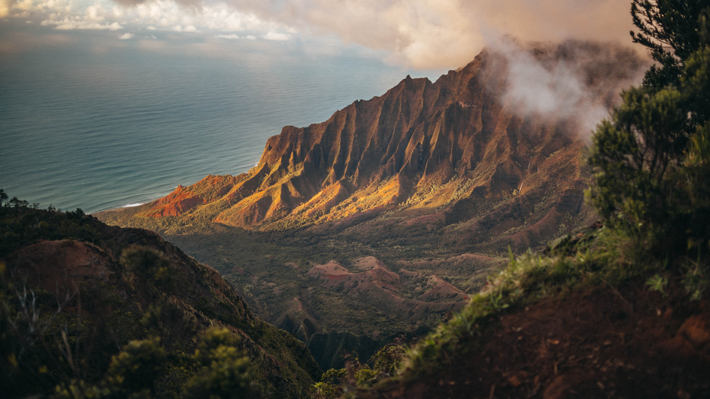
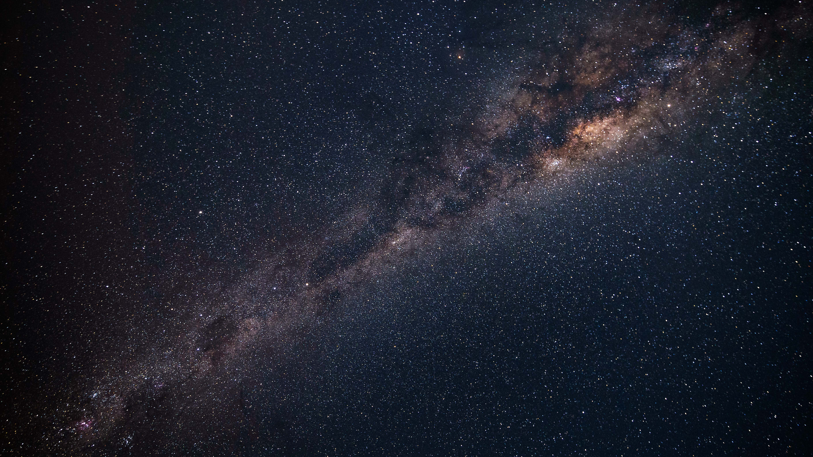
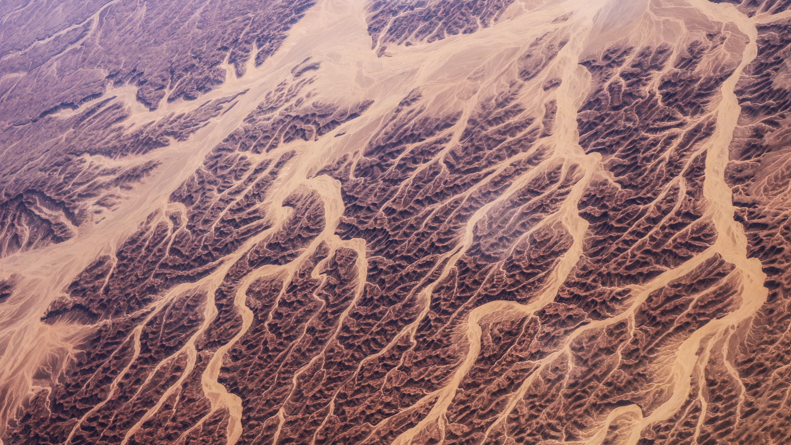
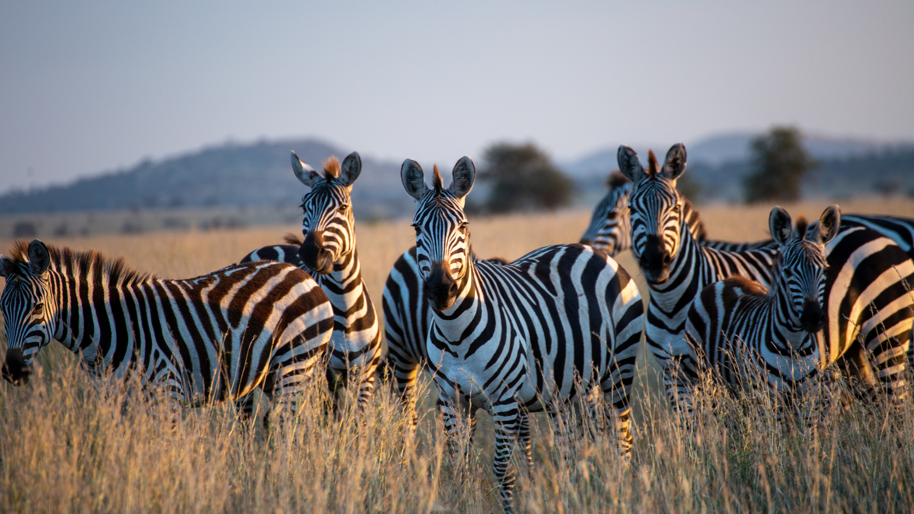
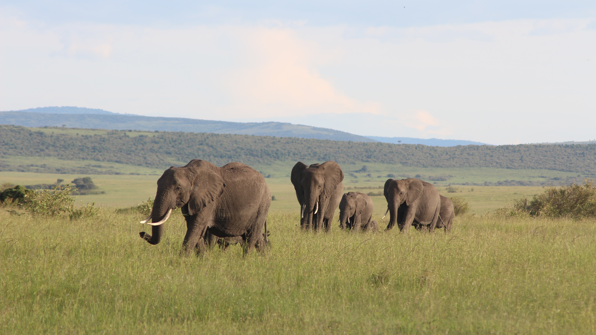
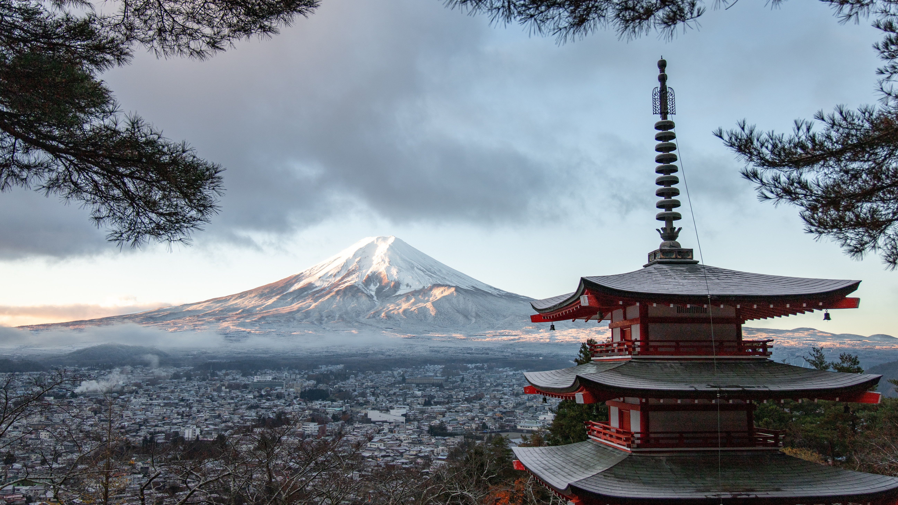
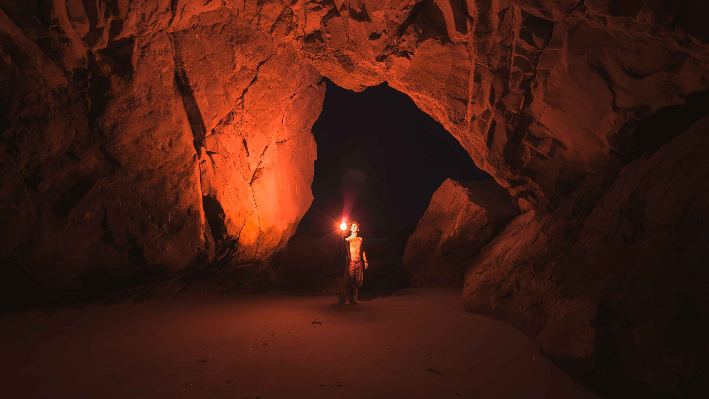
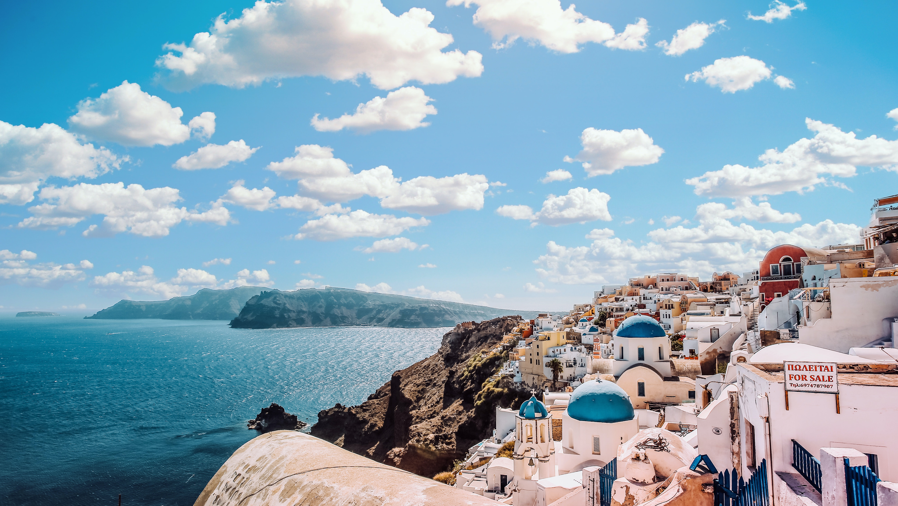
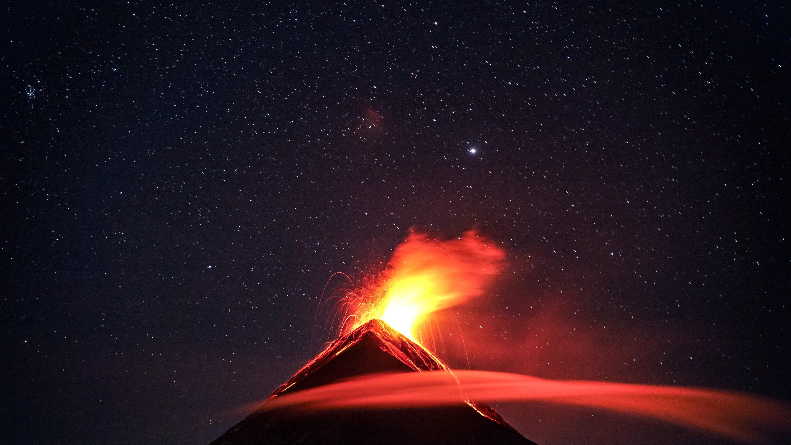

Mountains: Kapaʻa, Hawaii
From the beginning, this place was different from the other local
communities. It was a haven. Because of its marshy landscape, it was
not controlled by plantation owners like so many other towns
throughout Hawaiʻi. Here, field laborers, ordinary families, and
plantation luna (overseers) lived together as equals. No matter how
poor someone was or where they came from, they were welcome in this
place.

Milky Way: Uruguay
The Milky Way is the galaxy that includes our Solar System, with the
name describing the galaxy's appearance from Earth: a hazy band of
light seen in the night sky formed from stars that cannot be
individually distinguished by the naked eye.
Radius: 52,850 light years
Age: 13.61 billion years
Number of Stars: 100–400 billion

Feeling Blue: Mont-Saint-Michel, France
Mont-Saint-Michel is a tidal island and mainland commune in
Normandy, France. The island lies approximately one kilometre off
the country's north-western coast, at the mouth of the Couesnon
River near Avranches and is 7 hectares in area.

Aerial Shot: Egypt Desert
Egypt, a country linking northeast Africa with the Middle East,
dates to the time of the pharaohs. Millennia-old monuments sit along
the fertile Nile River Valley, including Giza's colossal Pyramids
and Great Sphinx as well as Luxor's hieroglyph-lined Karnak Temple
and Valley of the Kings tombs. The capital, Cairo, is home to
Ottoman landmarks like Muhammad Ali Mosque and the Egyptian Museum,
a trove of antiquities.

Zebras: Tanzania
Tanzania is an East African country known for its vast wilderness
areas. They include the plains of Serengeti National Park, a safari
mecca populated by the “big five” game (elephant, lion, leopard,
buffalo, rhino), and Kilimanjaro National Park, home to Africa’s
highest mountain. Offshore lie the tropical islands of Zanzibar,
with Arabic influences, and Mafia, with a marine park home to whale
sharks and coral reefs.

Northern Lights: Northwest Territories
They occur when charged particles from the sun interact with the
Earth's atmosphere and create a light show in the sky. The different
colors of the aurora are caused by different gases in the
atmosphere, and the unique shape of the aurora is caused by the
Earth's magnetic field.

Elephants: Condado De Nakuru, Kenia
Kenya is a country in East Africa with coastline on the Indian
Ocean. It encompasses savannah, lakelands, the dramatic Great Rift
Valley and mountain highlands. It's also home to wildlife like
lions, elephants and rhinos. From Nairobi, the capital, safaris
visit the Maasai Mara Reserve, known for its annual wildebeest
migrations, and Amboseli National Park, offering views of Tanzania's
5,895m Mt. Kilimanjaro.

Wavy: Baler, Aurora.
Today, surfing is becoming a popular weekend activity; both for
travelers coming from Manila, or foreign travelers looking for the
best stoke. They go to Baler to either surf, learn to surf, or just
surf all over again not only at Charlie’s Point, the most popular
surf spot in Baler, but also at Cemento, among others. Hostels, hip
cafes, and artisan restaurants now line up the long shoreline of
Baler, creating a communal vibe where travelers, artists, and locals
bond over their shared love for surfing.

Mt. Fuji: Japan
Japan’s Mt. Fuji is an active volcano about 100 kilometers southwest
of Tokyo. Commonly called “Fuji-san,” it’s the country’s tallest
peak, at 3,776 meters. A pilgrimage site for centuries, it’s
considered one of Japan’s 3 sacred mountains, and summit hikes
remain a popular activity. Its iconic profile is the subject of
numerous works of art, notably Edo Period prints by Hokusai and
Hiroshige.

Humans: Unknown
Human intelligence is a mental quality that consists of the
abilities to learn from experience, adapt to new situations,
understand and handle abstract concepts, and use knowledge to
manipulate one's environment.

Architecture: Santorini, Greece
Santorini is one of the Cyclades islands in the Aegean Sea. It was
devastated by a volcanic eruption in the 16th century BC, forever
shaping its rugged landscape. The whitewashed, cubiform houses of
its 2 principal towns, Fira and Oia, cling to cliffs above an
underwater caldera (crater). They overlook the sea, small islands to
the west and beaches made up of black, red and white lava pebbles.

Volcano Eruption: Guatemala
Volcanoes erupt when molten rock called magma rises to the surface.
Magma is formed when the earth's mantle melts. Melting may happen
where tectonic plates are pulling apart or where one plate is pushed
down under another. Magma is lighter than rock so rises towards the
Earth's surface.
{kind=link}
{kind=link}
{kind=link}
{kind=link}
{kind=link}
{kind=link}
{kind=link}
{kind=link}
{kind=link}